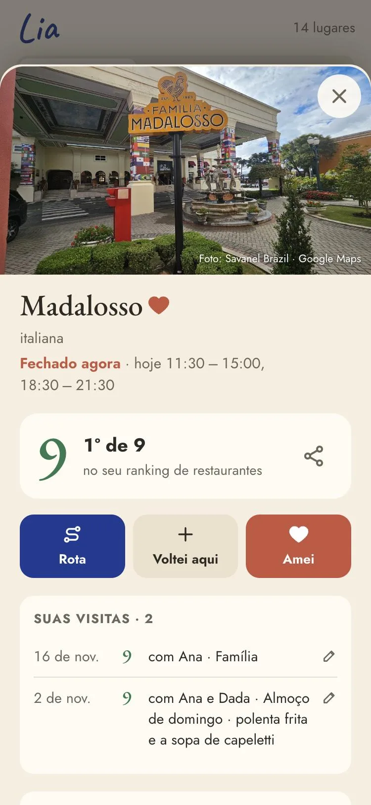
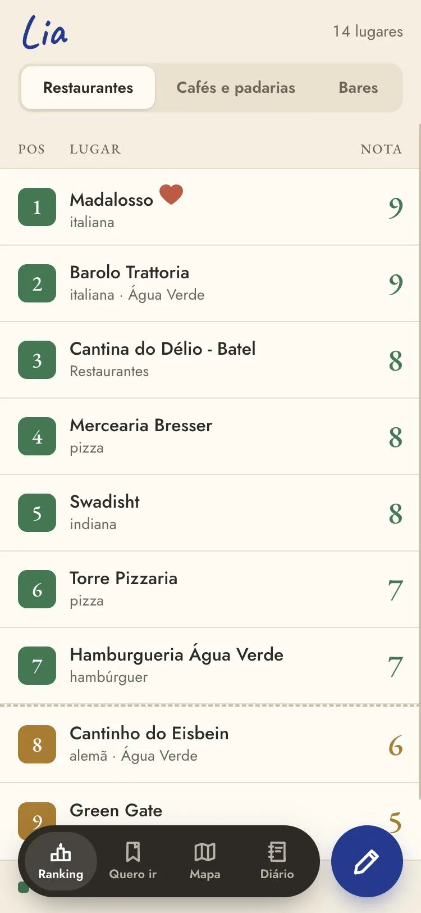
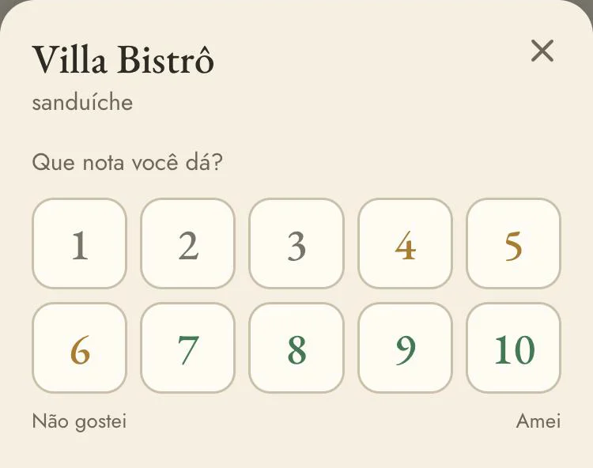
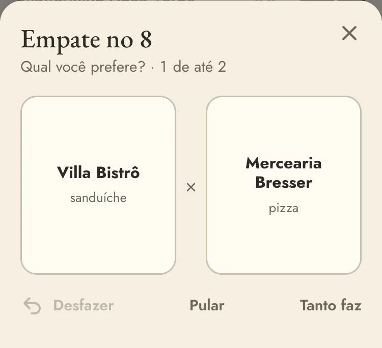
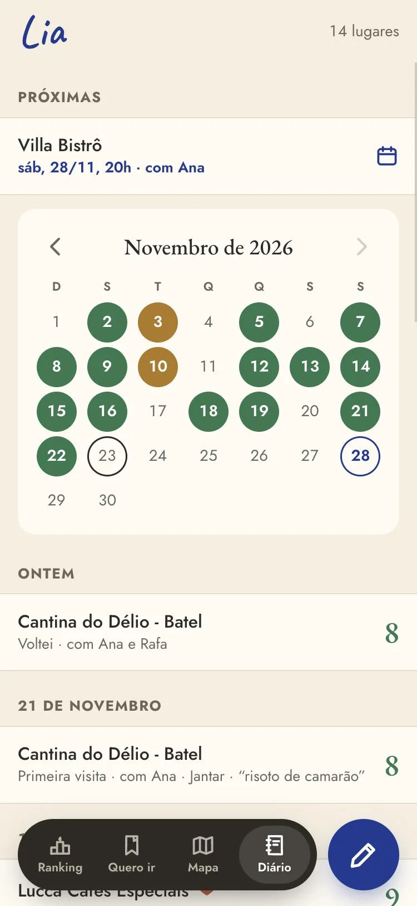
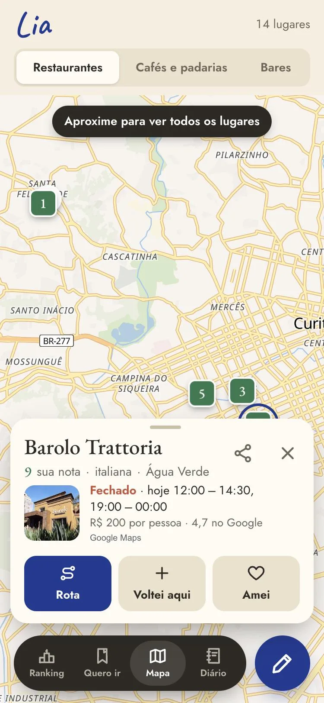

Seu ranking de onde comer em Curitiba.
A Lia é o Letterboxd dos restaurantes, cafés e bares da cidade. Você registra onde foi, compara com os lugares que já conhece e, sem perceber, monta a sua lista dos melhores.
Grátis. Android e iPhone, sem loja de apps.


Você não dá nota. Você compara.
Escolha uma nota de 1 a 10. Se ela empatar com outro lugar seu, a Lia pergunta qual você prefere.
Duas ou três escolhas e o lugar encontra a posição dele no seu ranking. Nada de ficar pensando se a pizza da Bresser é 8,3 ou 8,4.


Um diário de tudo que você viveu.
Cada ida fica guardada: a data, a nota daquele dia, com quem você foi, o que pediu e as fotos. Voltou e mudou de ideia? A Lia mostra se o lugar subiu ou caiu.
- Calendário com todos os dias em que você saiu para comer
- Quatro favoritos no perfil e listas como “Pra levar quem vem de fora”
- Quero ir com dia marcado e convite pronto para mandar no WhatsApp
Siga quem tem bom gosto.
Veja o ranking dos amigos, quem já foi naquele lugar antes de você e a nota que deu. Você escolhe o que cada um pode ver.

Só Curitiba. De propósito.
A Lia nasceu aqui e, por enquanto, só existe aqui. São mais de 1.800 restaurantes, cafés, padarias e bares da cidade no mapa, com horário, faixa de preço e foto de cada um.
Começamos pela cidade onde a gente come. Quando o seu ranking estiver cheio, a gente conversa sobre a próxima.
Batel · Água Verde · Santa Felicidade · Centro · Mercês · Juvevê · Cabral · Bigorrilho · Rebouças · São Francisco

Comece pelo último lugar onde você comeu.
Grátis, sem anúncios. Leva um minuto para criar a conta.